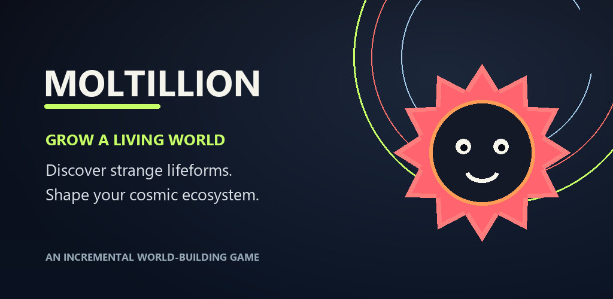

这一切都始于一个细胞。第一次接触会产生足够的生物质来投资您的第一批生产者。很快，当您离开时，您的身体就会成长。当你回来时，你会加强你所建造的东西，解锁突变还是为你的下一次重生做准备？
按照自己的节奏发展世界
投资您的生物量，尝试突变并发现新世界。每日挑战为短期课程赋予了目的。玩游戏时获得的水晶可以解锁你身体的调色板。
为下一次宇宙复兴做准备
宇宙重生开启了一个新的周期，并提供了持久改进的途径。当进展缓慢时，将下一个级别与重生会给你带来的东西进行比较。借助 Google Play 游戏，您还可以在当今和历史排行榜上比较您的生物质产量。
感谢 Beta 测试人员对进度的反馈。要为您的第一个周期做好准备，请找到我们的 宇宙重生指南.